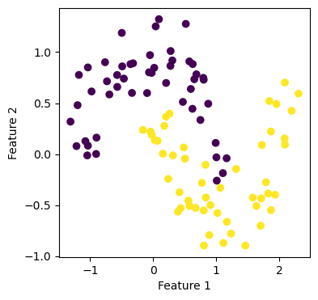
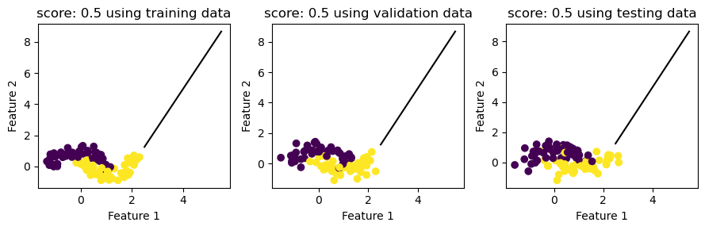

from matplotlib import pyplot as plt
import numpy as np
from sklearn.linear_model import LogisticRegression
from sklearn.svm import SVC
# from final_project_code import FinalProject
# from newton_raphson import Newton_Raphson
# from final_plot import plot_stuff
from my_svm import supp_vec_machine
from sklearn.tree import DecisionTreeClassifier
from sklearn.ensemble import RandomForestClassifier%load_ext autoreload
%autoreload 2import pandas as pd
from sklearn.preprocessing import LabelEncoder
from itertools import combinations
from matplotlib.patches import Patch
# import seaborn as sns
# from mlxtend.plotting import plot_decision_regions# from sklearn.metrics import roc_curve
# from sklearn.metrics import roc_auc_score
# from sklearn.metrics import confusion_matrix
# from sklearn.metrics import classification_report
# FP = FinalProject()
# df = pd.read_csv("./AG_Corp_Prod_DataBase.csv")# df = FP.balanced_one_minus_one(df)
# train, validate, test = FP.split_data(df)
# df_train, X_train, y_train = FP.prepare_data(train)
# df_validate, X_validate, y_validate= FP.prepare_data(validate)
# df_test, X_test, y_test = FP.prepare_data(test)# cols = ['PowerperWorker', 'RevperGrandWorker']
# cols = ['logWorkers', 'logPower']
# NR = Newton_Raphson()
# FP = FinalProject()
# X_train,y_train = FP.make_ready_for_regression(X_train, y_train, cols)
# X_validate,y_validate= FP.make_ready_for_regression(X_validate, y_validate, cols)
# X_test, y_test = FP.make_ready_for_regression(X_test, y_test, cols)# mySVC = SVC(kernel="linear", gamma="auto", shrinking=False)
# mySVC.fit(X_test, y_test)# mysvm = supp_vec_machine(row_length=row_length)
# mysvm.fit(X_test,y_test, max_iter=1e3, alpha=1, tol=1e-5, lamb=0.5)# print(mysvm.weights)
# print(mysvm.beta)# mysvm.big_plot(X_train, y_train, X_validate, y_validate, X_test, y_test, 9,3)from sklearn.datasets import make_moons
X,y= make_moons(100, shuffle=True, noise = 0.2)
X_validate, y_validate= make_moons(100, shuffle=True, noise = 0.25)
X_test, y_test= make_moons(100, shuffle=True, noise = 0.30)
plt.rcParams["figure.figsize"] = (4,4)
plt.scatter(X[:,0], X[:,1], c=y)
labels=plt.gca().set(xlabel="Feature 1", ylabel="Feature 2")
mysvm1 = supp_vec_machine()
mysvm1.fit(X,y, max_iter=1e3, alpha=1, tol=1e-6, lamb=0.5)iter_count: 10
iter_count: 20
iter_count: 30
iter_count: 40
iter_count: 50
iter_count: 60
iter_count: 70
iter_count: 80
iter_count: 90
iter_count: 100
iter_count: 110
iter_count: 120
iter_count: 130
iter_count: 140
iter_count: 150
iter_count: 160
iter_count: 170
iter_count: 180
iter_count: 190
iter_count: 200
iter_count: 210
iter_count: 220
iter_count: 230
iter_count: 240
iter_count: 250
iter_count: 260
iter_count: 270
iter_count: 280
iter_count: 290
iter_count: 300
iter_count: 310
iter_count: 320
iter_count: 330
iter_count: 340
iter_count: 350
iter_count: 360
iter_count: 370
iter_count: 380
iter_count: 390
iter_count: 400
iter_count: 410
iter_count: 420
iter_count: 430
iter_count: 440
iter_count: 450
iter_count: 460
iter_count: 470
iter_count: 480
iter_count: 490
iter_count: 500
iter_count: 510
iter_count: 520
iter_count: 530
iter_count: 540
iter_count: 550
iter_count: 560
iter_count: 570
iter_count: 580
iter_count: 590
iter_count: 600
iter_count: 610
iter_count: 620
iter_count: 630
iter_count: 640
iter_count: 650
iter_count: 660
iter_count: 670
iter_count: 680
iter_count: 690
iter_count: 700
iter_count: 710
iter_count: 720
iter_count: 730
iter_count: 740
iter_count: 750
iter_count: 760
iter_count: 770
iter_count: 780
iter_count: 790
iter_count: 800
iter_count: 810
iter_count: 820
iter_count: 830
iter_count: 840
iter_count: 850
iter_count: 860
iter_count: 870
iter_count: 880
iter_count: 890
iter_count: 900
iter_count: 910
iter_count: 920
iter_count: 930
iter_count: 940
iter_count: 950
iter_count: 960
iter_count: 970
iter_count: 980
iter_count: 990yourSVC = SVC(kernel="linear", gamma="auto", shrinking=False)
yourSVC.fit(X, y)SVC(gamma='auto', kernel='linear', shrinking=False)In a Jupyter environment, please rerun this cell to show the HTML representation or trust the notebook.
On GitHub, the HTML representation is unable to render, please try loading this page with nbviewer.org.
SVC(gamma='auto', kernel='linear', shrinking=False)
print(yourSVC.coef_)
print(yourSVC.intercept_)[[ 0.87393314 -1.83503289]]
[0.07359716]mysvm1.big_plot(X, y, X_validate, y_validate, X_test, y_test, 9,3)